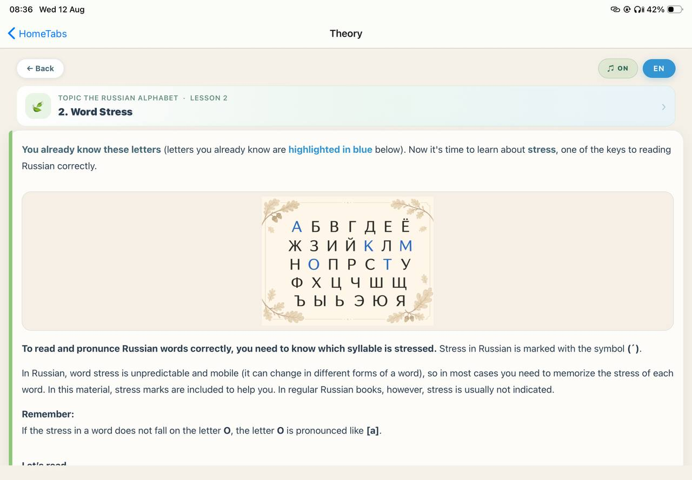

Алфавит и первые слова
Познакомьтесь с кириллицей, послушайте записанное произношение и выучите полезные русские слова.
Помощь, сообщения об ошибках и идеи: grammilla.academy@gmail.com
Grammilla — приложение для изучения русского языка как иностранного, которое объединяет объяснения, лексику, аудио и упражнения: от первых букв кириллицы до падежей и глаголов.
Проходите пошаговые уроки и открывайте учебный мир, вдохновлённый Лукоморьем, русской литературой и фольклором.
Для iPhone, iPad и Android.

Начните с основ или вернитесь к теме, которую хотите понять лучше. Связывайте каждое объяснение с примерами и практикой.
Познакомьтесь с кириллицей, послушайте записанное произношение и выучите полезные русские слова.
Изучайте русские падежи, глаголы и построение предложений с объяснениями и примерами в удобном темпе.
Проходите тесты и словарные тренировки, повторяйте изученные темы и следите за своим прогрессом.
Настоящие скриншоты приложения на iPad и Android. Откройте изображение, чтобы посмотреть его в полном размере.
На скриншотах и иллюстрации Лукоморья показан английский текст. В приложении можно выбрать русский, английский или итальянский; оформление может отличаться в зависимости от версии.



Две темы из Grammilla: глаголы движения без приставок и несовершенный и совершенный вид.
идти — ходить · ехать — ездить
В русском языке различаются движение пешком и на транспорте. Также важны направление движения и его регулярность.
Пешком / на транспорте
Я сейчас иду в супермаркет. А ты? (Говорящий идёт пешком в конкретный момент.)
А я сейчас еду на автобусе в центр. (Говорящий едет на транспорте в конкретный момент.)
Идти / ехать — однонаправленные глаголы: например, движение в одном направлении в определённый момент. Ходить / ездить могут обозначать повторяющееся, регулярное движение или движение туда и обратно.
Все четыре глагола относятся к несовершенному виду. Различие направленности не следует смешивать с различием несовершенного и совершенного вида.
НСВ / СВ · процесс / результат
Выбор вида зависит от контекста и от того, что вы хотите выразить. Сравните примеры из урока об инфинитиве:
Несовершенный вид — внимание к процессу
Я хочу говорить по-русски. (Важен процесс: говорить по-русски.)
Совершенный вид — внимание к результату
Я хочу сказать тебе правду. (Важен результат: сообщить правду.)
Процесс / результат — отправная точка, а не полное правило. В приложении рассматриваются и другие случаи, например глаголы СВ с по- со значением действия в течение некоторого времени.
Краткие примеры по материалам уроков Grammilla о глаголах движения и видах глагола. Полные объяснения и упражнения доступны в приложении.
Russ with Love
Преподаватель русского · Один из создателей Grammilla
Познакомьтесь с одним из создателей Grammilla. Разбирайте грамматику, повседневные фразы и подготовку к ТРКИ вместе с Любой — пусть русский продолжается и за пределами приложения.
Все ссылки откроются в новой вкладке.
Интерфейс и объяснения в Grammilla доступны на русском, английском и итальянском языках.
Да. Начните с русского алфавита, произношения и первых слов, затем переходите к грамматике и практическим темам.
Да. В Grammilla есть уроки о глаголах движения без приставок, а также о несовершенном и совершенном виде.
Грамматические и словарные упражнения могут дополнить подготовку. Ориентируйтесь также на требования экзамена и другие материалы для вашего уровня.
Можно начать как гость. Войдите в аккаунт, если хотите синхронизировать свой прогресс.
По ссылкам на App Store и Google Play в верхней части этой страницы.